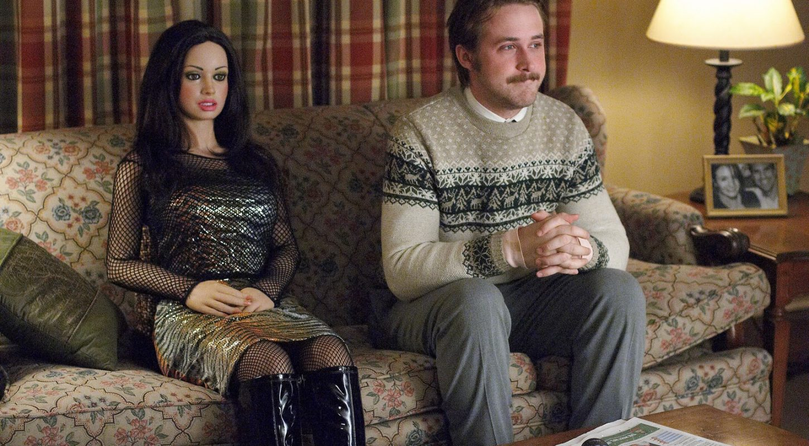
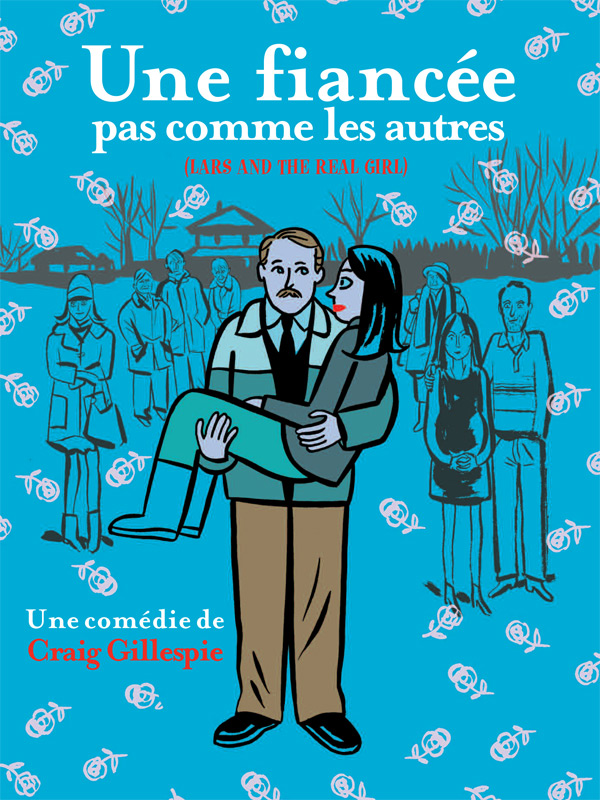
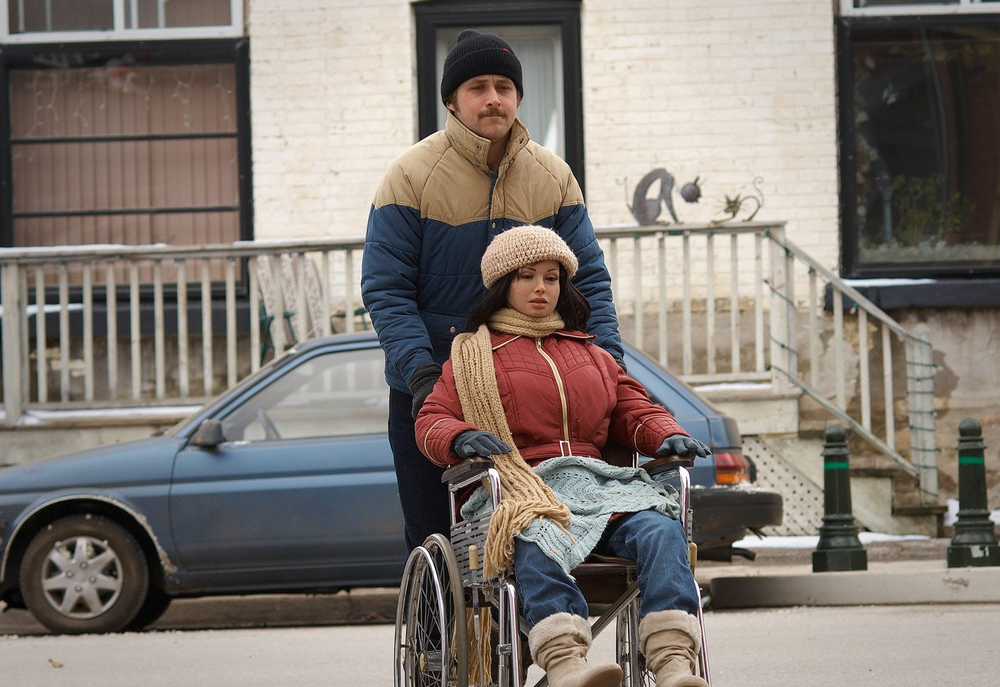

Une fiancée pas comme les autres - Craig Gillepsie



23H30 ➡︎ Une fiancée pas comme les autres - Craig Gillepsie, 2008, 106 min
Timide et introverti, Lars vit seul dans le garage aménagé de son frère Gus et de sa belle-sœur Karin, dans un petit village du Middlewest. Quand il leur annonce qu'il a rencontré une jeune fille sur Internet, Gus et Karin sont très impatients de faire sa connaissance. Leur surprise est grande lorsque Lars leur présente officiellement l'étrange Bianca. Bianca accompagne Lars à table, à l'église ou au supermarché attirant l'attention générale du village.